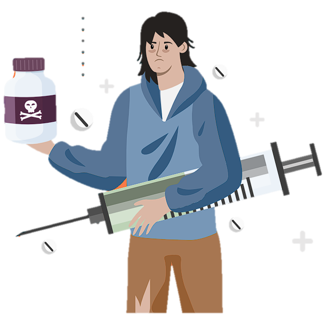
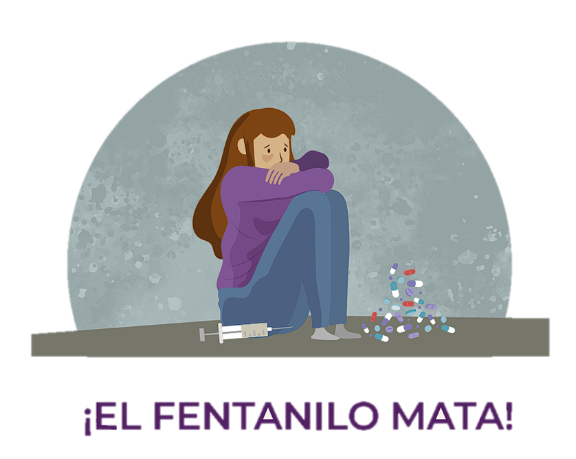

PROPÓSITO
Dar a conocer el grave daño que causa el fentanilo a la salud de quienes lo consumen en México.
¿QUE ES?
El fentanilo es una droga analgésica que se usa para disminuir el
dolor; puede causar graves problemas a la salud y muerte por sobredosis. En años recientes, su uso
ilícito se ha extendido, principalmente, en el norte del país, donde
su fabricación y tráfico han contribuido al aumento de la violencia
en esa región.
Existen dos tipos de fentanilo: Elfentanilo de uso médico y el fentanilo ilícito.
Los médicos lo recetan a pacientescon cáncer terminal para tratarlos dolores crónicos o a personas que se realizan operaciones
quirúrgicas.
El fentanilo ilícito es una sustanciade abuso producida en laboratorios clandestinos. Los residuos tóxicos de su fabricación provocan
daños en la salud de la poblaciónque habita cerca de esos laboratorios. Así también, la competencia por el dominio del mercado genera entornos violentos que afectan
la seguridad de los sitios donde se produce y trafica.

Cómo se consume y en qué formas
Las principales formas de consumo de esta sustancia son por vía
oral, fumado e inyectado; estas últimas dos son las de mayor riesgo. Desde 2016 el fentanilo ilícito
se distribuye en diferentes presentaciones:
• polvo blanco.
• gotas vertidas sobre papel secante.
• pequeñas golosinas.
• goteros para los ojos.
• vaporizadores nasales.
• pastillas como analgésicos recetados.
• pastillas de colores con el sello “M30”.
Efectos durante su consumo
Se emplea como tratamiento terapéutico del dolor crónico, pero de manera ilícita se toma para
tener una sensación de relajación que suele durar entre tres y cinco horas. El abuso en el consumo de
esta sustancia provoca los siguientes efectos:
Físicos
• Estado de aletargamiento, adormecimiento.
• Sensación de sopor, ensoñación, sueño profundo.
• En el caso de una sobredosis se reducen las funciones vitales como la respiración y el pulso cardiaco, hasta llegar a la muerte.
Psicológicos
• Sedación, placer.
• Pérdida del interés en las actividades cotidianas y en la convivencia interpersonal.
• Estado de aislamiento.
• Pérdida de la conciencia.
Efectos después de su consumo
Al detener su consumo, se produce un fuerte estado de abstinencia que se manifiesta con la
dificultad para conciliar el sueño, irritabilidad, episodios de ansiedad por el deseo de volver a
consumir y episodios de depresión. Los principales síntomas
físicos son escalofríos, diarrea,náuseas, vómito, dolor muscular,
dolor de huesos, calambres, sudoración excesiva, malestar estomacal, debilidad y fatiga.
Los síntomas de necesidad y falta
de la droga (abstinencia) inician
en cuanto se suspende el consumo y se pueden prolongar por varios días después de la última dosis. Se presentan con mayor fuerza
de acuerdo con la frecuencia de
consumo y a la cantidad de fentanilo acumulado en el organismo:
a mayor dosis y mayor frecuencia,
más fuerte es el deseo de seguir
consumiendo. Aunque es posible
que los síntomas físicos se reduzcan después de un par de semanas sin el consumo, los psicológicos aún se mantendrán
LAS DROGAS TRUNCAN TU PROYECTO DE VIDA Y TE PUEDEN MATAR
Ten presente que:
• Actualmente, el fentanilo es la droga más potente y adictiva del mercado ilícito.
• Se comercializa en diversas modalidades que facilitan su adquisición.
• No sólo tiene impacto irreversible en la salud de las personas, sino que afecta a las comunidades al aumentar la
violencia.

Principales daños irreversibles a la salud
• Descoordinación de las extremidades del cuerpo, como la falla al
caminar o el movimiento de un
solo lado del cuerpo.
• Alteraciones musculares, es decir, contracciones involuntarias o
alteraciones del equilibrio y disminución de la fuerza.
• Problemas en la pronunciación y articulación e incoherencias al hablar.
• Alteraciones del sueño, pérdida de la memoria y del apetito.
• Trastornos en la salud mental:
ansiedad y depresión.
• Problemas cardiacos.